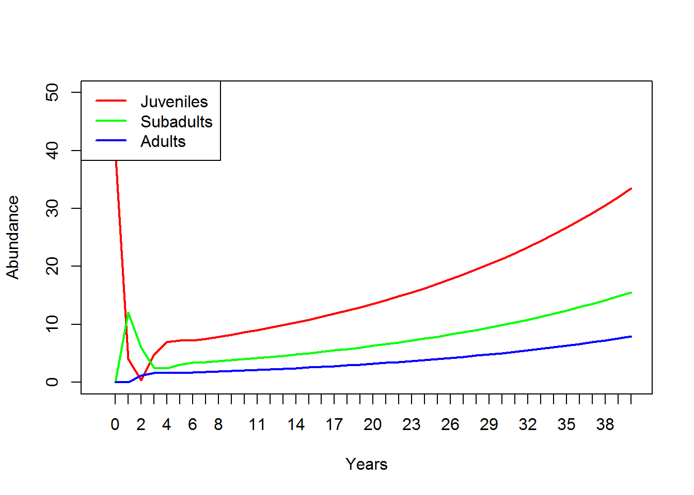

Matrix population models
NRES 470/670
Feb 11, 2017
Upcoming midterm exam
when and where The first midterm exam (out of two) is coming up on February 23. You will have the whole 50 minute class period to take the exam. Margarete and I will be at a meeting- one of my graduate students will fill in. The exam will be in our regular classroom.
what The exam will cover:
- All material in Chapters 1-3 of the Gotelli book.
- All material covered in lectures up to the “Stochasticity and Uncertainty” lecture (right after matrix population models).
- All material covered in labs 1-4.
- All additional assigned readings, including Ch. 1 of “Beyond Connecting the Dots”, Lande 1992, Heppell 1998 and Regan et al. 2002.
The exam will consist of a mixture of multiple-choice and short-answer questions.
Any questions?
Final projects:
Just a heads up about final projects
Why matrices?
Reason 1: simplify!
You might recognize this InsightMaker model from Lab 3. This represents an age-structured population with only three age classes. Imagine if there were five age classes, or 10? How many lines would you have to draw, how many equations would you have to put in different flows. It would be tedious, and you could easily run into errors that would be very hard to debug!

Consider the teasel example from Gotelli. How tedious would this be to implement in InsightMaker? And this is far from the most complicated populations out there (although notice that plants can do some things that animals can’t do- for instance go backwards in “age”. There MUST be an easier way!

The population vital rates for pretty much any age-structured or stage-structured population can be represented by a transition matrix, which summarizes all the information about mortality, birth rates, and transitions between stages! (and the fact that a life history like teasel can be represented by a transition matrix illustrates the generality of this concept!)
For example, the teasel vital rates can be summarized in this matrix:
## Seed1 seed2 ros1 ros2 ros3 flowering
## Seed1 0.000 0.00 0.000 0.000 0.000 322.380
## seed2 0.966 0.00 0.000 0.000 0.000 0.000
## ros1 0.013 0.01 0.125 0.000 0.000 3.448
## ros2 0.007 0.00 0.125 0.238 0.000 30.170
## ros3 0.008 0.00 0.000 0.245 0.167 0.862
## flowering 0.000 0.00 0.000 0.023 0.750 0.000Isn’t that elegant!!
We’ll go into more detail about matrices later!
Reason 2: projection!
In one of the questions in Lab 3, your were asked to use a life table to project the age structure of a population one time step in the future. Was it simple and straightforward to do this? (no!)
Life tables are great for summarizing the vital rates of age-structured populations. But life tables are not great for projecting age-structured abundance into the future!
You know what is great for projecting age-structured abundance into the future?
For example, let’s project a teasel population 1 year into the future:
First of all, we need to begin with a teasel population…
## Abundance
## Seed1 1000
## seed2 1500
## ros1 200
## ros2 300
## ros3 600
## flowering 25Then all we need to do is matrix-multiply this vector of abundances by the transition matrix from above! Each time we do this multiplication step, we advance one year!
Here’s how we can do this in R!
Year1 <- teasel_matrix %*% Initial_teasel
Year1## Abundance
## Seed1 8059.50
## seed2 966.00
## ros1 139.20
## ros2 857.65
## ros3 203.25
## flowering 456.90How easy is that!
To compute teasel abundance in year 2, we can simply repeat:
thisYear <- Year1
nextYear <- teasel_matrix %*% thisYear
nextYear## Abundance
## Seed1 147295.4220
## seed2 7785.4770
## ros1 1707.2247
## ros2 14062.6102
## ros3 702.3908
## flowering 172.1635We could use this strategy to simulate for ten years for example…
Notice the use of a for loop here!
nYears <- 10
tenYears <- matrix(0,nrow=6,ncol=nYears+1)
rownames(tenYears) <- rownames(Initial_teasel)
colnames(tenYears) <- seq(0,10)
tenYears[,1] <- Initial_teasel
for(t in 2:(nYears+1)){
tenYears[,t] <- teasel_matrix %*% tenYears[,t-1]
}
tenYears## 0 1 2 3 4 5
## Seed1 1000 8059.50 147295.4220 55502.0530 274098.158 1254742.541
## seed2 1500 966.00 7785.4770 142287.3777 53614.983 264778.821
## ros1 200 139.20 1707.2247 2799.7179 5425.969 18197.711
## ros2 300 857.65 14062.6102 9785.5436 28718.972 126857.393
## ros3 600 203.25 702.3908 4889.4070 4390.907 13317.225
## flowering 25 456.90 172.1635 850.2331 3892.123 3953.716
## 6 7 8 9 10
## Seed1 1274599.05 4160519.75 12493783.29 19821259.9 54739267.1
## seed2 1212081.29 1231262.68 4019062.08 12068994.7 19147337.1
## ros1 34866.57 77547.56 209719.50 440822.1 1018930.3
## ros2 160533.59 440850.62 1312972.86 2281135.7 5859547.7
## ros3 46750.08 68459.45 186131.95 505712.0 948267.5
## flowering 12905.64 38754.83 61484.15 169797.3 431750.1Finally, we can plot out the abundance of each stage over 10 years!

So projection is easy!
Reason 3: Linear algebra tricks!
There is a clear similarity between the finite population growth equation:
\(N_{t+1}=\lambda \cdot N_t\),
where \(N\) is abundance (as always), \(t\) is time, often in years but could be any time units, and \(\lambda\) is the multipicative growth rate over the time period \(t \rightarrow t+1\)
… and the matrix population growth equation:
\(\mathbf{N}_{t+1} = \mathbf{A} \cdot \mathbf{N}_{t}\),
where \(\mathbf{N}\) is a vector of abundances (abundance for all stages), and \(\mathbf{A}\) is the transition matrix, which we have seen before.
Q: Can you see the similarity between these two equations?
Both equations describe simple exponential growth or decline!
Q: Can you see the difference between these two equations?
Note that \(N\) in the first equation is a scalar – that is, it is just a naked number with no additional components.
WHEREAS,
\(\mathbf{N}\) in the second equation is a vector, a set of abundances structured by age or stage class.
Similarly, the finite population growth rate, \(\lambda\) is a scalar,
WHEREAS,
\(\mathbf{A}\) is a matrix
What about those tricks??
Okay one of the nifty tricks is this:
In one step, you can compute \(\lambda\) from \(\mathbf{A}\)!!
All you need to do is obtain the first, or dominant, eigenvalue of \(\mathbf{A}\)! This number is the finite rate of growth, \(\lambda\), for an age or stage-structured population.
Let’s do this in R!
What is the growth rate \(\lambda\) for the teasel population. If you recall, it looked like it was growing, so it should be above 1…
Lambda <- as.numeric(round(eigen(teasel_matrix)$values[1],2))
Lambda## [1] 2.32You don’t have to understand the math here- but I do want you to understand how simple that was- just one line of code and we computed the annual rate of growth from the teasel transition matrix!
Here’s another nifty trick:
In one step, you can compute stable age distribution from \(\mathbf{A}\)!!
All you need to do is obtain the right-hand eigenvector of \(\mathbf{A}\)! This vector represents the relative abundances in each age class at the stable age distribution.
Let’s do this in R!
What is the stable age distribution for the teasel population. If you recall, the first seed stage looked like it dominated in the figure above.
SAD <- abs(as.numeric(round(eigen(teasel_matrix)$vectors[,1],3)))
SAD/sum(SAD)## [1] 0.636615811 0.264909847 0.012482663 0.069348128 0.011789182 0.004854369Or you can use the ‘popbio’ package in R:
library(popbio)## Warning: package 'popbio' was built under R version 3.3.2stable.stage(teasel_matrix)## Seed1 seed2 ros1 ros2 ros3 flowering
## 0.636901968 0.264978062 0.012174560 0.069281759 0.012076487 0.004587164Q: Does a stage-structured population grow at the rate of \(\lambda\) per time step if it is NOT at stable age distribution?
For more on this, the bible of matrix population models is this book by Hal Caswell.
Mechanics of matrix population models
Let’s take a look at a basic age-structured population – specifically the in-class example from the last lecture (this one.). In InsightMaker it looks like this:

Let’s convert the vital rates to a three-stage projection matrix. Projection matrices are square matrices where the number of rows and columns are equal to the number of life stages. In this case, that means three! Let’s make a blank matrix for now:
TMat <- matrix(0,nrow=3,ncol=3)
stagenames <- c("Juveniles","Subadults","Adults")
rownames(TMat) <- stagenames
colnames(TMat) <- stagenames
TMat## Juveniles Subadults Adults
## Juveniles 0 0 0
## Subadults 0 0 0
## Adults 0 0 0You can read the elements of a transition matrix as follows:
“The per-capita production of (row name) by (col name) is (value of element)”
Now we can start filling in this matrix. Let’s begin with the top left element of the matrix. This represents the per-capita production of Juveniles (row) by Juveniles (col). What is the value of this?
How about the second row, first column. This represents the per-capita production of Subadults (row) by Juveniles (col). This is the transition rate from juvenile to subadult. The value from our model is 0.3.
Let’s update our transition matrix:
TMat[2,1] <- 0.3
TMat## Juveniles Subadults Adults
## Juveniles 0.0 0 0
## Subadults 0.3 0 0
## Adults 0.0 0 0If we keep going, we get the following matrix. See if you can understand what this matrix is saying about the transitions from and two the three life stages.
TMat[,1] <- c(0.1,0.3,0)
TMat[,2] <- c(0,0.4,0.1)
TMat[,3] <- c(4,0,0.85)
TMat## Juveniles Subadults Adults
## Juveniles 0.1 0.0 4.00
## Subadults 0.3 0.4 0.00
## Adults 0.0 0.1 0.85Now we can run a 40-year projection and compare it with the InsightMaker model. It had better look the same!!
First we must specify the initial abundances in each stage:
InitAbund <- c(40,0,0)
names(InitAbund) <- colnames(TMat)
InitAbund## Juveniles Subadults Adults
## 40 0 0So we are starting with only Juveniles…
nYears <- 40
allYears <- matrix(0,nrow=nrow(TMat),ncol=nYears+1)
rownames(allYears) <- rownames(TMat)
colnames(allYears) <- seq(0,nYears)
allYears[,1] <- InitAbund
for(t in 2:(nYears+1)){
allYears[,t] <- TMat %*% allYears[,t-1]
}
allYears## 0 1 2 3 4 5 6 7 8 9
## Juveniles 40 4 0.4 4.84 6.964 7.21240 7.243840 7.497874 7.864454 8.246053
## Subadults 0 12 6.0 2.52 2.460 3.07320 3.393000 3.530352 3.661503 3.823937
## Adults 0 0 1.2 1.62 1.629 1.63065 1.693372 1.778667 1.864902 1.951317
## 10 11 12 13 14 15
## Juveniles 8.629873 9.027040 9.443505 9.880158 10.337148 10.815176
## Subadults 4.003391 4.190318 4.384239 4.586747 4.798746 5.020643
## Adults 2.041013 2.135200 2.233952 2.337283 2.445365 2.558435
## 16 17 18 19 20 21
## Juveniles 11.315258 11.838463 12.385866 12.958584 13.557784 14.184690
## Subadults 5.252810 5.495701 5.749819 6.015688 6.293850 6.584875
## Adults 2.676734 2.800505 2.929999 3.065481 3.207228 3.355529
## 22 23 24 25 26 27
## Juveniles 14.840584 15.526807 16.244760 16.995910 17.781794 18.604017
## Subadults 6.889357 7.207918 7.541209 7.889912 8.254738 8.636433
## Adults 3.510687 3.673020 3.842859 4.020551 4.206459 4.400964
## 28 29 30 31 32 33
## Juveniles 19.464258 20.364277 21.305913 22.291089 23.321820 24.400211
## Subadults 9.035778 9.453589 9.890719 10.348061 10.826551 11.327166
## Adults 4.604463 4.817371 5.040124 5.273178 5.517007 5.772111
## 34 35 36 37 38 39
## Juveniles 25.528466 26.708891 27.943899 29.236013 30.587874 32.002244
## Subadults 11.850930 12.398912 12.972232 13.572063 14.199629 14.856214
## Adults 6.039011 6.318252 6.610406 6.916068 7.235864 7.570447
## 40
## Juveniles 33.482014
## Subadults 15.543159
## Adults 7.920502Now let’s plot it out!
plot(1,1,pch="",ylim=c(0,50),xlim=c(0,nYears+1),xlab="Years",ylab="Abundance",xaxt="n")
cols <- rainbow(3)
for(s in 1:3){
points(allYears[s,],col=cols[s],type="l",lwd=2)
}
axis(1,at=seq(1,nYears+1),labels = seq(0,nYears))
legend("topleft",col=cols,lwd=rep(2,3),legend=rownames(allYears))
Does this look the same as the InsightMaker results?
Limitations of matrix population models
Matrix population models are great, but they have some limitations too.
What about density-dependence?
In some ways, while introducing a new level of realism in our models – age-structure – we have been ignoring another type of realism that we introduced in earlier lectures- density-dependence!
Which vital rates are density-dependent? All? Some? It depends? Are the data available?
How do you incorporate density-dependence into a matrix population model?
How do you incorporate predator-prey dynamics into a matrix population model?
Whatever you can do with a matrix population model, you can also do in InsightMaker (or other programming platform)
The reverse is NOT true: you can not always convert InsightMaker models to matrix population models
Hmmm….
In-class exercise: matrix projection models
Translate the following paragraph into a matrix population model. Remember a matrix population model has two components- an initial abundance vector and a transition matrix.

We assumed that the Red-tailed hawk life history could be described in terms of three major life stages: hatchling, juvenile, and adult (generally the third year of life and beyond). Adults are the primary reproductive stage, and produce an average of 3 new hatchlings each year. Juveniles tend to produce only 1 new hatchling per year on average. We assumed that adults experienced an average of 18% mortality each year. Juvenile mortality was set at 30% per year. Approximately 5% of juveniles fail to transition to adults, remaining in the juvenile phase. Finally, hatchlings had a 20% chance of surviving and transitioning to become juveniles. We initialized the population with 1000 hatchlings, 150 juveniles, and 5 adults.
Q: What does the transition matrix look like?
Q: What does the initial stage abundance vector look like?
Q: Is this at a stable stage-distribution?
Q: What is the growth rate of this population?